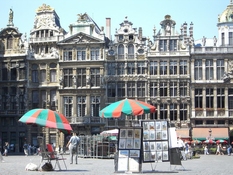
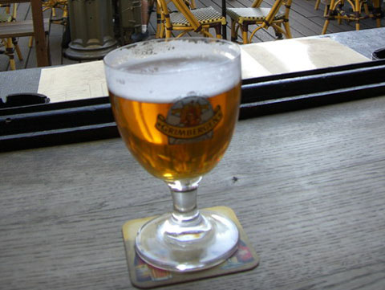
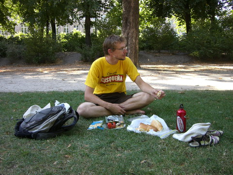
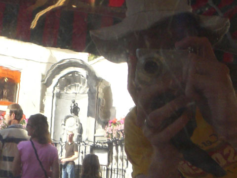
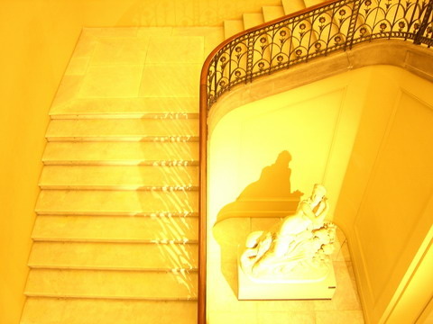

belgium
brussels

spent a few days in brussels. more classic squares and lovely buildings.

and where else to drink belgium beer but in a real belgium beer cafe.

a classic example of our money saving european lunches. bread, cheese, tomato and avocado. yumo!

one famous sight in brussels is the peeing boy statue. here he is reflected in the base of a chocolate fountain.

and as for all old cities, great musuems jam packed with great art